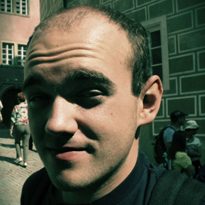

PREDSTAVUJEME NÁŠ TÍM - CODE CRUSHERS
Ing. Michal Kompan, PhD.
Bc. Dušan Cymorek

Bc. Peter Gašpar

Bc. Vladimír Ľalík

Bc. Michal Polko

Bc. Slavomír Šárik

Manažment experimentov
Tímový projekt 2014/2015 • FIIT STU BA
fiit.tp05 [at] gmail.com
Napadne vám revolučná myšlienka, prelomový objav či nápad na produkt, ktorý zmení svet. Neviete určiť, či by ho niekto používal? Chcete, aby za vás “niekto” “niečo” vyskúšal, otestoval, vyplnil a poskytol vám tak dôležité údaje?
Alebo patríte medzi mnohých študentov, ktorí potrebujú pre svoje záverečné práce získať odpovede na svoje otázky? Našou myšlienkou je vytvoriť systém, ktorý všetky tieto problémy vyrieši za vás. Rýchlo a jednoducho.
Vytvárajte a spravujte experimenty. Získajte participantov, ktorí vám pomôžu kvalitne otestovať váš produkt a zodpovedať na vaše otázky.
Zapájajte sa do experimentov a nechajte sa za to odmeniť. Nezabudnite, že vaša snaha a vedomosti sa vyplatia. Zvýšte si svoje hodnotenie poctivo vykonaným experimentom, zvýšite tým aj svoje odmeny.
Potrebuje váš spolužiak či známy pomôcť s experimentom, či vyplnením dotazníka do školy alebo práce? Zapojte sa do jeho experimentu a pomôžte mu, prípadne pomôžte ostatným.
Na základe našich predchádzajúcich skúseností pri vývoji softvérových riešení v rámci bakalárskeho štúdia a ich následnom overovaní sme sa stretli s potrebou zapojiť do tohto procesu i ďalších ľudí. V praxi sme zistili, že získanie potrebného počtu participantov môže byť časovo i technicky náročná úloha. Tento čas by sa však dal efektívnejšie využiť pri ďalšom výskume.
Zvyčajne je pri participantoch dôležitý nielen ich počet, ale aj ich vhodnosť pre daný experiment. Každý človek je jedinečný svojimi osobnostnými črtami, životnými skúsenosťami a ochotou zúčastňovať sa rozličných experimentov. Ďalšími problémami sú nedostatočná propagácia experimentov, prípadne motivácia pre participantov.
Prvý kontakt so systémom chceme používateľom spríjemniť použitím moderných technológií - akou je napríklad prihlásenie pomocou sociálnych sietí alebo univerzitného konta študenta. Tieto technológie môžu navyše nášmu systému pomôcť získať zaujímavé informácie o vhodných účastníkoch experimentov. Dôležité je pritom zabezpečiť, aby sme mali k dispozícii aktuálne a najmä pravdivé informácie. Nesmieme však zabúdať aj na nevyhnutnosť ochrany osobných údajov, a tiež mieru, do akej bude systém “zvedavý”.
Motivátorom pre zadávateľov by mali byť najmä kvalitní participanti, ktorých im náš systém pomôže nájsť. Východiskom môžu byť pritom nielen poskytnuté osobné údaje, ale napríklad aj predchádzajúca účasť participantov na experimentoch. S tým úzko súvisí aj kvalitatívne ohodnotenie ich účasti (uvedené nižšie) alebo miera záujmu o účasť na konkrétnom experimente.
Hybnú silu pre participantov budú predstavovať odmeny, ktoré im poskytnú práve zadávatelia experimentov. Našou snahou bude prostredníctvom systému ponechať výber typu a výšky odmeny na zadávateľovi. Príkladom môže byť odmena vo forme finančnej čiastky, alebo darčekového poukazu. Ďalšou možnosťou je motivovanie prostredníctvom interného hodnotiaceho systému (zahŕňajúceho body, odznaky či ocenenia), na základe ktorého bude systém vytvárať zoznamy najlepších používateľov (participantov i zadávateľov).
V neposlednom rade nemožno zabudnúť aj na distribúciu celého systému. Najvhodnejšie riešenie v tomto smere poskytuje použitie webových technológií, a teda vytvorenie webovej aplikácie. Tým zabezpečíme rýchlu a jednoduchú dostupnosť na viacerých platformách, no zároveň môžeme využiť technológie, ktoré čo najviac zvýšia celkový zážitok z používania aplikácie.
| Úloha | Termín | Šprint | Riešitelia | Stav |
|---|---|---|---|---|
| Plagát tímu | 6.10.2014 | - | Celý tím | |
| Založenie webového sídla | 19.10.2014 | - | Mišo, Peťo | |
| Sprevádzkovanie webovej aplikácie | 19.10.2014 | - | Slavo, Števo, Dušan | |
| Prihláška na TP Cup | 28.10.2014, 14:00 | - | Celý tím | |
| Jazykové nastavenia | 28.10.2014 | 1. | Slavo | |
| Registrácia nového používateľa | 28.10.2014 | 1. | Slavo, Števo | |
| Autentifikácia používateľa | 28.10.2014 | 1. | Slavo, Števo | |
| Pridávanie experimentov | 28.10.2014 | 1. | Miro, Peťo | |
| Detail profilu používateľa | 28.10.2014 | 1. | Dušan, Vlado | |
| Design - farby, základné prvky | 28.10.2014 | 1. | Mišo, Peťo | |
| Design - horný panel, bočný panel | 28.10.2014 | 1. | Mišo, Peťo | |
| Design - pätička | 28.10.2014 | 1. | Mišo, Peťo | |
| Správa experimentu | 11.11.2014 | 2. | Slavo, Peťo | |
| Detail experimentu | 11.11.2014 | 2. | Števo | |
| Notifikácie | 11.11.2014 | 2. | Vlado, Miro | |
| Nastavenia - môj profil + vyplnenie | 11.11.2014 | 2. | Dušan, Mišo | |
| Design - profil používateľa/spoločnosti | 11.11.2014 | 2. | Mišo, Peťo | |
| Design - stránka experimentu | 11.11.2014 | 2. | Mišo, Peťo | |
| Design - registrácia/prihlásenie | 11.11.2014 | 2. | Mišo, Peťo | |
| Refactor - pridávanie experimentu | 18.11.2014 | 3. | Peťo | |
| Refactor - preklady | 18.11.2014 | 3. | Dušan, Peťo | |
| Refactor - dizajn | 18.11.2014 | 3. | Mišo, Peťo | |
| Refactor - experiment | 18.11.2014 | 3. | Slavo, Števo | |
| Refactor - participanti | 18.11.2014 | 3. | Peťo | |
| Refactor - notifikácie | 18.11.2014 | 3. | Miro, Vlado | |
| Refactor - follow | 18.11.2014 | 3. | Vlado | |
| Dokončenie nastavení profilu | 18.11.2014 | 3. | Dušan | |
| Komentovanie kódu | 18.11.2014 | 3. | všetci | |
| Priebežná príprava unit testov | 18.11.2014 | 3. | Števo | |
| Vyhľadávanie experimentov | 2.12.2014 | 4. | Slavo, Vlado | |
| Filtrovanie výsledkov vyhľadávania | 2.12.2014 | 4. | Štefan | |
| Hodnotenie používateľov (workeri aj zadávatelia) | 2.12.2014 | 4. | Dušan | |
| Spustenie experimentu | 2.12.2014 | 4. | Miro | |
| Pozvanie používateľa do experimentu | 2.12.2014 | 4. | Vlado | |
| Šablóna - Vyhľadávanie / filtrovanie výsledkov | 2.12.2014 | 4. | Mišo, Peťo | |
| Šablóna - Landing page | 2.12.2014 | 4. | Mišo, Peťo | |
| Šablóna - Dashboard | 2.12.2014 | 4. | Mišo, Peťo | |
| Pridať datagridy | 2.12.2014 | 4. | Mišo, Peťo | |
| Bočné menu | 2.12.2014 | 4. | Mišo, Peťo | |
| Dashboard - implementácia | 9.12.2014 | 5. | Slavo | |
| Realizácia experimentu | 9.12.2014 | 5. | Števo | |
| Inštrukcie pri spustení experimentu | 9.12.2014 | 5. | Mišo | |
| Texty pre landing page | 9.12.2014 | 5. | Dušan, Peťo | |
| Fórum pre experiment | 9.12.2014 | 5. | Slavo, Vlado, Mišo | |
| Vypnutie / zapnutie notifikácií | 9.12.2014 | 5. | Miro | |
| Načítavanie dát z AISu (predprípava) | - | LS | ||
| Načítavanie dát z AISu (implementácia) | - | LS | ||
| Odporúčanie experimentov | - | LS | ||
| Odporúčanie zadávateľov | - | LS | ||
| Odporúčanie participantov | - | LS | ||
| Systém odmien | - | LS | ||
| Platobná brána | - | LS | ||
| Štatistika firmy | - | LS | ||
| Štatistika účastníka | - | LS | ||
| Nastavenia aplikácie | - | LS | ||
| Design - administrácia | - | LS |
| #T | Popis | Stav |
|---|---|---|
| 1 | Diskusia k témam, odovzdanie zoznamu kompetencií tímu. | |
| 2 | Pridelenie tém, rozdelenie úloh, plán projektu, prvá analýza problému. | |
| 3 | Inicializácia riešenia projektu: vytvorenie Product Backlog, prvý dátový model, nastavenie prostredia pre vývoj a nasadzovanie, vytvorenie kostry projektu. | |
| 4 | Práca na príbehoch šprintu č.1-1Z | |
| 5 | Ukončenie šprintu č.1-1Z. | |
| 6 | Práca na príbehoch šprintu č.2-2Z | |
| 7 | Ukončenie šprintu č.2-2Z | |
| 8 | Práca na príbehoch šprintu č.3-3Z | |
| 9 | Ukončenie šprintu č.3-3Z. | |
| 10 | Práca na príbehoch šprintu č.4-4Z. | |
| 11 | Ukončenie šprintu č.4-4Z. | |
| 12 | Ukončenie šprintu č.5-5Z (finalizácia výstupov) |
Zdroj: http://www2.fiit.stuba.sk/~bielik/courses/tp-slov/tp-main.html#harmonogram-zs
Ilkovičova 2, 842 16 Bratislava 4
fiit.tp05 [at] gmail.com
fiit.stuba.sk